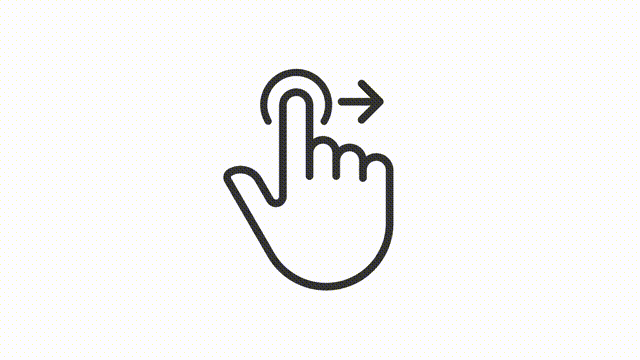

<ion-header no-border no-shadow mode="md">
  <ion-toolbar mode="md">
    <ion-buttons slot="start">
      <ion-button (click)="close()" >
        <ion-icon name="arrow-back-sharp" style="font-size: 2em!important;" color="primary"></ion-icon>
      </ion-button>
    </ion-buttons>
    <ion-title class="ion-text-center"><h1 style="margin: 0!important;">Delete account</h1></ion-title>
    <div slot="end" style="width: 48px"></div>
  </ion-toolbar>
</ion-header>

<ion-content mode="md" class="ion-padding">
  <div class="content">
    <div class="delete-account-info">
      <h2>
        You will be automatically logged out and will no longer have access to the ZamsConnect.
      </h2>
      <h2>
        If you need to re-create your account at a later time, follow the account creation flow from the login page of the ZamsConnect mobile app.
      </h2>
    </div>
  </div>
  <ion-modal #swipeToContinueModal trigger="swipe-to-continue-modal" class="swipe-to-continue-modal" [initialBreakpoint]="1" [breakpoints]="[0, 1]">
    <ng-template>
      <ion-content mode="md">
        <div class="modal-content">
          
        </div>

      </ion-content>
      <ion-footer>
        <ion-toolbar mode="md">
        <ion-row class="ion-margin">
          <ion-col [style.background-color]="'var(--ion-color-' + color + ')'">
            <div align="center">
              <ion-text color="light">{{text}}</ion-text>
            </div>
            <ion-fab-button class="swipe-button" #swipeButton color="light"
              (touchmove)="onTouchMove($event)"
              (touchstart)="onTouchStart($event)"
              (touchend)="onTouchEnd($event)">
              <ion-icon class="left" name="chevron-forward-outline"></ion-icon>
              <ion-icon name="chevron-forward-outline"></ion-icon>
              <ion-icon class="right" name="chevron-forward-outline"></ion-icon>
            </ion-fab-button>
          </ion-col>
        </ion-row>
        </ion-toolbar>
      </ion-footer>
    </ng-template>
  </ion-modal>


<ion-modal class="result-modal" [isOpen]="isOpenRequestResultModal">
  <ng-template>
    <div class="success-modal-content">
      <ion-icon name="checkmark-circle-outline" *ngIf="requestResultModal?.type==='success'; else errorIcon" color="primary"></ion-icon>
      <ng-template #errorIcon>
        <ion-icon name="checkmark-circle-outline" color="danger"></ion-icon>
      </ng-template>

      <div class="title">
        <h1>{{requestResultModal?.title}}</h1>
      </div>
      <div class="desc">
        <h1>{{requestResultModal?.desc}}</h1>
      </div>
      <div class="action">
        <ion-button
          *ngIf="requestResultModal?.type==='success'; else errorAction"
          mode="md"
          expand="outline"
          shape="round"
          size="large"
          color="primary"
          (click)="requestResultModal.done()">
        Done
      </ion-button>
      <ng-template #errorAction>
        <ion-button
          mode="md"
          expand="outline"
          shape="round"
          size="large"
          color="danger"
          (click)="requestResultModal.retry()">
        Retry
      </ion-button>
      </ng-template>

    </div>
    </div>
  </ng-template>
</ion-modal>
</ion-content>


<ion-footer>
  <ion-toolbar
  mode="md">
    <ion-button
      mode="md"
      expand="full"
      shape="round"
      size="large"
      color="danger"
      fill="outline"
      (click)="onDeleteAccount()">
    Delete account
  </ion-button>
  </ion-toolbar>
</ion-footer>
